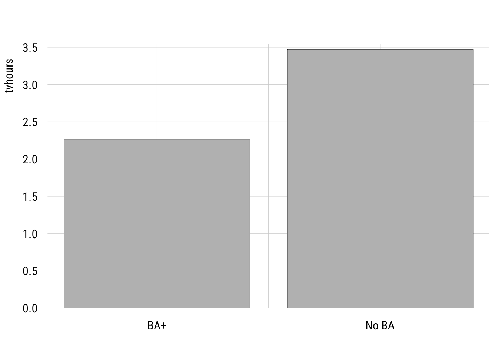
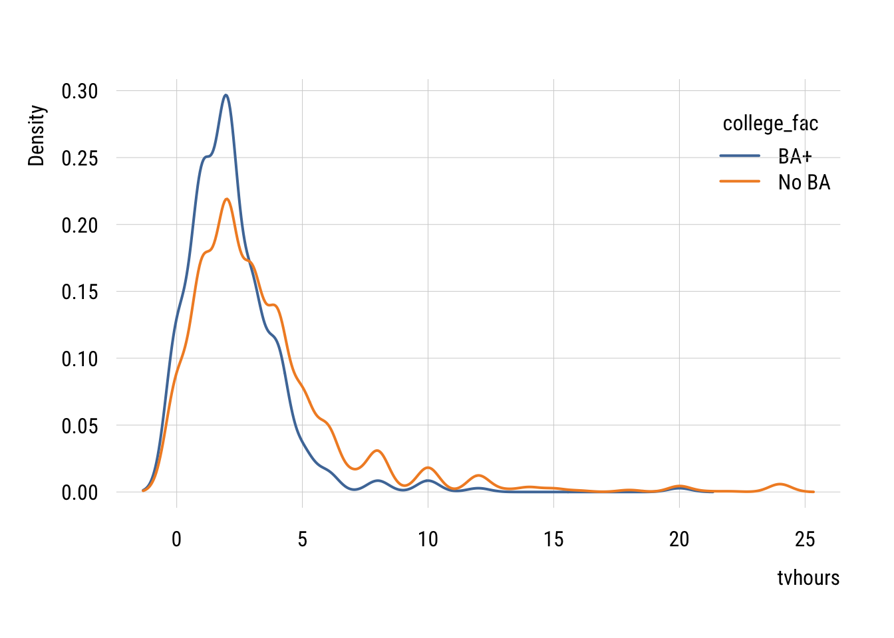
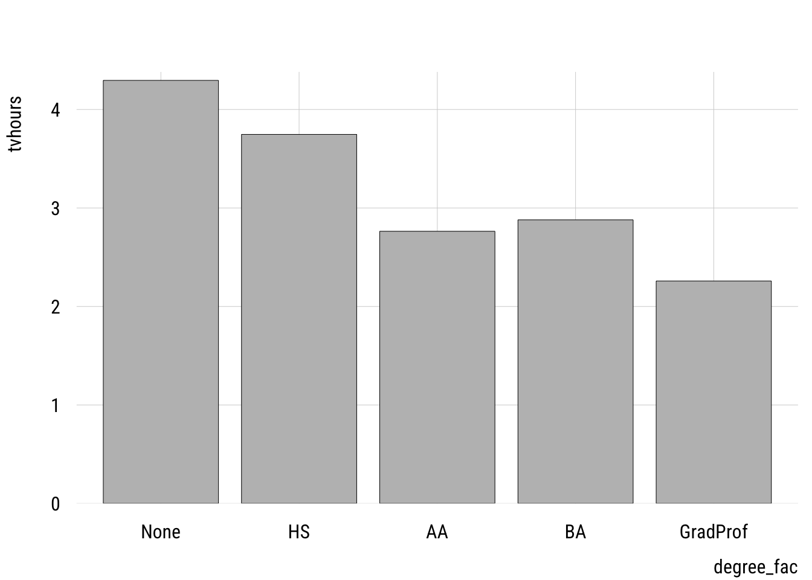
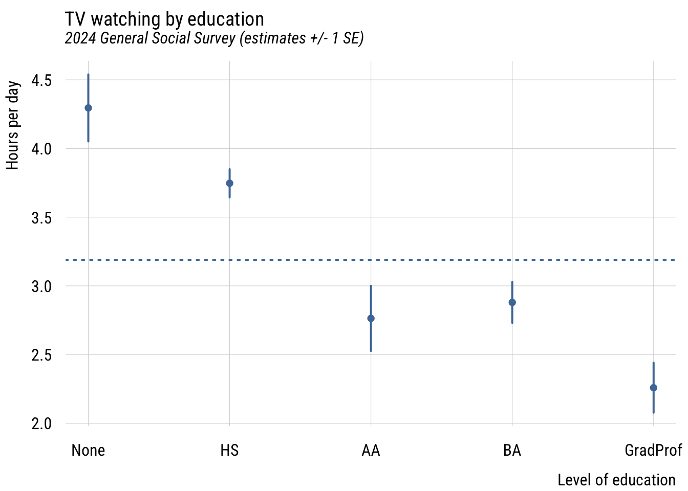
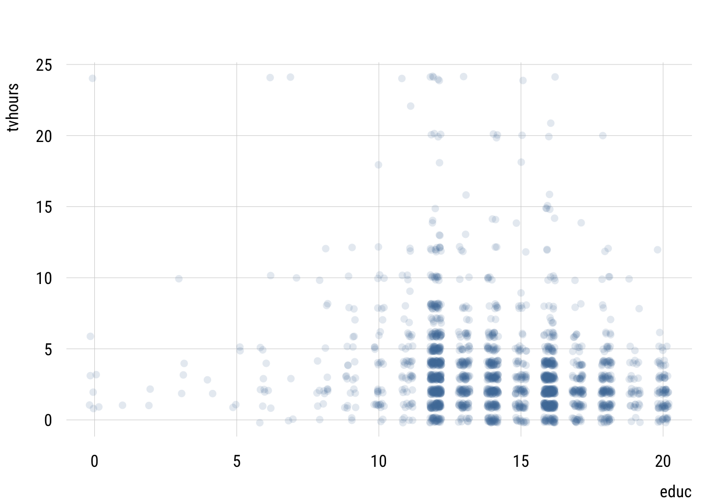
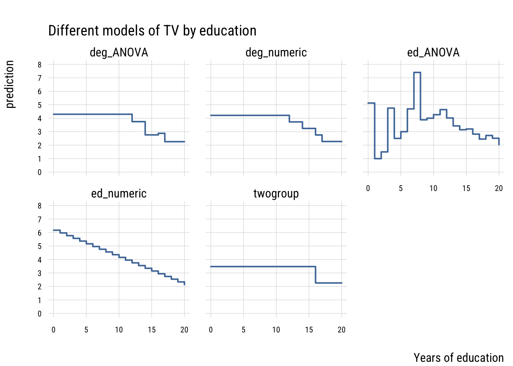

pacman::p_load(dplyr,
tidyr,
broom,
stringr,
modelsummary,
marginaleffects,
tinyplot,
ggplot2) # for heatmap and ggplot2 tabsChapter 9
Goals
The goal of this chapter is show you how to use categorical predictors in a sensible way. We will also compare and contrast the book’s way of approaching coding to what is typical in sociology1.
1 The book makes a strong pitch for the value of orthogonal contrast coding versus dummy coding. This is the opposite of our convention in sociology and I admit I simply can’t understand the idea that contrast coding is easier. It must be cultural differences! I did try for a while but the availability of post-hoc test calculation functions like car::linearHypothesis() and marginaleffects::hypotheses seem to make contrast coding irrelevant to my use cases at least.
Set up
As usual, we’ll set packages and our theme.
tinytheme("ipsum",
family = "Roboto Condensed",
palette.qualitative = "Tableau 10",
palette.sequential = "agSunset")# Match tinyplot ipsum style
theme_set(
theme_minimal(base_family = "Roboto Condensed") +
theme(panel.grid.minor = element_blank())
)
# Match Tableau 10 palette used by tinytheme (hex codes from ggthemes)
tableau10 <- c("#5778a4", "#e49444", "#d1615d", "#85b6b2", "#6a9f58",
"#e7ca60", "#a87c9f", "#f1a2a9", "#967662", "#b8b0ac")
options(
ggplot2.discrete.colour = \() scale_color_manual(values = tableau10),
ggplot2.discrete.fill = \() scale_fill_manual(values = tableau10)
)We will use the GSS data. Our outcome will be tvhours and we will use various tranformations of education as the predictors.
gss2024 <- readRDS("data/gss2024.rds")
d <- gss2024 |>
select(tvhours, degree, educ) |>
drop_na() |>
haven::zap_labels() |>
mutate(college_fac = if_else(degree > 3, "BA+", "No BA"),
college = if_else(degree > 3, 1, 0),
degree_fac = factor(
case_match(degree,
0 ~ "None",
1 ~ "HS",
2 ~ "AA",
3 ~ "BA",
4 ~ "GradProf"),
levels = c("None", "HS", "AA", "BA", "GradProf")))Two-groups as t-test and model
Here is the comparison of the hours of TV watched per day between college-educated and non-college educated respondents.
Show plot code
plt(tvhours ~ college_fac,
data = d,
type = "barplot",
xlab = "")
We can write this as a regression model where the outcome is a function of a dummy variable, college, where 1 means “B” and 0 means “no BA.”
m1 <- lm(tvhours ~ college,
data = d)Show code
msummary(list("Two groups" = m1),
fmt = 3,
estimate = "{estimate} ({std.error})",
statistic = NULL,
gof_map = c("nobs", "F", "r.squared"))| Two groups | |
|---|---|
| (Intercept) | 3.474 (0.076) |
| college | -1.216 (0.199) |
| Num.Obs. | 2140 |
| F | 37.426 |
| R2 | 0.017 |
Many people would estimate this two-group comparison as a t-test. Here’s how you would do that in R.
t.test(tvhours ~ college,
data = d,
var.equal = TRUE) # assumes one sigma for both groups
Two Sample t-test
data: tvhours by college
t = 6.1177, df = 2138, p-value = 1.126e-09
alternative hypothesis: true difference in means between group 0 and group 1 is not equal to 0
95 percent confidence interval:
0.8260789 1.6055561
sample estimates:
mean in group 0 mean in group 1
3.474493 2.258675 You can see everything that is important is the same here between the two approaches.
One wrinkle here is that I had to set var.equal = TRUE here in order to make the lm() and the t.test() identical. That’s because the regression model only allows one \(\sigma\) (the SD of the residuals).
The default value of var.equal is FALSE, which allows the the two groups to have different within-group standard deviations. This is often called a Welch’s t-test.
t.test(tvhours ~ college,
data = d,
var.equal = FALSE) # allows two different sigmas
Welch Two Sample t-test
data: tvhours by college
t = 8.7244, df = 681.58, p-value < 2.2e-16
alternative hypothesis: true difference in means between group 0 and group 1 is not equal to 0
95 percent confidence interval:
0.9421956 1.4894394
sample estimates:
mean in group 0 mean in group 1
3.474493 2.258675 You can see why this might be better given that the two groups do seem to have different variances.
Show plot code
plt(~ tvhours | college_fac,
data = d,
type = "density",
lw = 2,
legend = "topright")
We don’t often do this in regression form but we absolutely can. We can modify the standard linear regression as follows:
\[\begin{align} Y_i &= \beta_0 + \beta_1 X_i + \varepsilon_i \\ X_i &\in \{0, 1\} \\ \varepsilon_i &\sim \mathcal{N}(0, \sigma^2_{X_i}) \end{align}\]
…and estimate it like this using generalized least squares.
m_welch <- nlme::gls(tvhours ~ college,
data = d,
weights = nlme::varIdent(form = ~ 1 | college),
method = "ML")Show code
summary(m_welch)Generalized least squares fit by maximum likelihood
Model: tvhours ~ college
Data: d
AIC BIC logLik
11026.56 11049.24 -5509.282
Variance function:
Structure: Different standard deviations per stratum
Formula: ~1 | college
Parameter estimates:
0 1
1.0000000 0.5888609
Coefficients:
Value Std.Error t-value p-value
(Intercept) 3.474493 0.08048258 43.17074 0
college -1.215818 0.13926341 -8.73034 0
Correlation:
(Intr)
college -0.578
Standardized residuals:
Min Q1 Med Q3 Max
-1.1167316 -0.6223127 -0.1381457 0.1529983 8.7716463
Residual standard error: 3.434727
Degrees of freedom: 2140 total; 2138 residualThis looks pretty much like lm() output except for the Variance function part at the top. This tells you that the residual SD of the college group is 0.5888609 times the size of the non-college group (3.434727).
Putting this choice in a modeling context means that we can use all the tricks we normally use to decide if we need the more complicated model.
AIC(m1, m_welch) df AIC
m1 3 11142.51
m_welch 4 11026.56BIC(m1, m_welch) df BIC
m1 3 11159.52
m_welch 4 11049.24You can see here that both information criteria support the more complicated model with separate variances2.
2 We could also use a likelihood-ratio test here using anova(). But to do so, we’d need to reestimate the linear regression model using nlme::gls() where you just delete the weights line.
Multiple categories
We can extend the same idea to multiple groups. This is generally known as one-way ANOVA (“analysis of variance”) but we’re going to do this in the context of a regression model.
First let’s plot the group mean differences.
Show code
plt(tvhours ~ degree_fac,
data = d,
type = "bar")
One thing to watch out for is using a numeric variable. I have two versions of the degree variable: degree, which is numeric and degree_fac which is a factor variable. It’s easy to see if we make a frequency table.
Numeric version
d |> group_by(degree) |>
summarize(n = n())# A tibble: 5 × 2
degree n
<dbl> <int>
1 0 176
2 1 988
3 2 186
4 3 473
5 4 317Factor version
d |> group_by(degree_fac) |>
summarize(n = n())# A tibble: 5 × 2
degree_fac n
<fct> <int>
1 None 176
2 HS 988
3 AA 186
4 BA 473
5 GradProf 317We want to estimate a separate mean for each group so we want to use the factor version.
If we accidentally use the numeric version, we get this:
m2_numeric <- lm(tvhours ~ degree,
data = d)
tidy(m2_numeric)# A tibble: 2 × 5
term estimate std.error statistic p.value
<chr> <dbl> <dbl> <dbl> <dbl>
1 (Intercept) 4.21 0.126 33.4 2.97e-197
2 degree -0.485 0.0555 -8.74 4.43e- 18This tells us that each additional degree predicts a -0.4849135 difference in tvhours. This treats degree as a continuous predictor, which is not how we implement the ideas in the book3.
3 As we’ll see below, this might actually not be an unreasonable model. But it’s not an ANOVA!
Here’s how we can estimate a linear model that is equivalent to a one-way ANOVA:
m2 <- lm(tvhours ~ degree_fac,
data = d)Dummy coding
Show code
msummary(list("ANOVA" = m2),
fmt = 3,
estimate = "{estimate} ({std.error})",
statistic = NULL,
gof_map = c("nobs", "F", "r.squared"))| ANOVA | |
|---|---|
| (Intercept) | 4.295 (0.244) |
| degree_facHS | -0.548 (0.265) |
| degree_facAA | -1.532 (0.340) |
| degree_facBA | -1.416 (0.286) |
| degree_facGradProf | -2.037 (0.304) |
| Num.Obs. | 2140 |
| F | 20.362 |
| R2 | 0.037 |
The intercept here is the expected value for those with no degree (the “reference category”). And each of the dummy variables indicate how different that category is from the reference.
Contrast coding
The book pushes orthogonal contrast coding rather than dummy coding. As I noted above, that’s not really the standard in sociology but I thought I would at least show you a few things.
Helmert coding
Helmert coding is for ordinal variables and compares each level of the factor to the preceding level. It’s pretty easy to implement in R:
contrasts(d$degree_fac) <- contr.helmert(5)
m2_helmert <- lm(tvhours ~ degree_fac, data = d)
tidy(m2_helmert)# A tibble: 5 × 5
term estimate std.error statistic p.value
<chr> <dbl> <dbl> <dbl> <dbl>
1 (Intercept) 3.19 0.0852 37.4 3.93e-236
2 degree_fac1 -0.274 0.132 -2.07 3.84e- 2
3 degree_fac2 -0.419 0.0906 -4.63 3.88e- 6
4 degree_fac3 -0.181 0.0475 -3.80 1.50e- 4
5 degree_fac4 -0.233 0.0411 -5.65 1.79e- 8“Theoretical” coding
If particular theoretical comparisons are of interest, these can be encoded through orthogonal contrasts. The book explains the rules here.
my_contrasts <- matrix(
c( 4, -1, -1, -1, -1, # LT HS vs. all others
0, 3, -1, -1, -1, # HS vs. AA/BA/Grad
0, 0, 2, -1, -1, # AA vs. BA/Grad
0, 0, 0, 1, -1), # BA vs. Grad
nrow = 5
)
contrasts(d$degree_fac) <- my_contrasts
m2_ortho <- lm(tvhours ~ degree_fac, data = d)
tidy(m2_ortho)# A tibble: 5 × 5
term estimate std.error statistic p.value
<chr> <dbl> <dbl> <dbl> <dbl>
1 (Intercept) 3.19 0.0852 37.4 3.93e-236
2 degree_fac1 0.277 0.0518 5.34 1.03e- 7
3 degree_fac2 0.278 0.0379 7.34 2.95e- 13
4 degree_fac3 0.0648 0.0882 0.734 4.63e- 1
5 degree_fac4 0.310 0.117 2.64 8.27e- 3We’ll see below that there are easier ways to do this.
Deviance, “effect”, or sum-to-zero coding
Another way to code these is to code their departures from the unweighted grand mean, which is what the mean would be if all groups were of equal size. We can get these deviations most easily using emmeans::emmeans():
emmeans::emmeans(m2, ~ degree_fac) |>
emmeans::contrast("eff", # "effects" contrasts = deviation from grand mean
adjust = "none") # no p-value adjustment contrast estimate SE df t.ratio p.value
None effect 1.107 0.207 2135 5.340 <.0001
HS effect 0.558 0.117 2135 4.783 <.0001
AA effect -0.425 0.203 2135 -2.100 0.0358
BA effect -0.309 0.143 2135 -2.158 0.0310
GradProf effect -0.930 0.165 2135 -5.653 <.0001You can see these estimates sum to zero.
Plotting
In a case like this, regardless of how we code the predictors, plotting the estimated marginal means is probably the easiest thing to do visually.
Data prep
my_means <- emmeans::emmeans(m2, ~ degree_fac)
wgm <- my_means |> as_tibble() |> pull(emmean) |> mean()
preds <- my_means |>
as_tibble() |>
mutate(ub = emmean + SE,
lb = emmean - SE)Show plot code
plt(emmean ~ degree_fac,
data = preds,
type = "pointrange",
ymax = ub,
ymin = lb,
lw = 2,
xlab = "Level of education",
ylab = "Hours per day",
main = "TV watching by education",
sub = "2024 General Social Survey (estimates +/- 1 SE)")
plt_add(type = type_hline(h = wgm),
lw = 2,
lty = 3)
This gives you a sense of how different the groups are from each other in a general sense.
Post-hoc tests
The main reason the authors seem to like orthogonal contrast coding is that it allows you to make the comparisons you want. For example, in the dummy coding results above, you can see that both BA and GradProf are significantly different from the reference category but not whether they are different from each other.
Rather than requiring us to set up such contrasts in advance, we can simply get them after the model is estimated using marginaleffects:
marginaleffects::hypotheses(m2,
"degree_facGradProf = degree_facBA")
Hypothesis Estimate Std. Error z Pr(>|z|) S 2.5 %
degree_facGradProf=degree_facBA -0.621 0.235 -2.64 0.00821 6.9 -1.08
97.5 %
-0.161This gives you the difference and standard error of the difference between these groups.
Model comparison
In the spirit of what we’ve done so far, let’s think of how to compare these models. Consider three options for modeling educational differences on TV watching:
- college vs. non-college
- degree status as a continuous variable (the “accident” from above)
- degree status as a nominal variable
- years of education as a continuous variable
- years of education as a nominal variable
First, we could visualize the raw data.
Show plot code
plt(tvhours ~ educ,
data = d,
type = "jitter",
alpha = .15)
This isn’t very useful since we have so many points.
Let’s visualize the predictions these different models make to simplify this relationship.
Data prep
# do the missing models
m_educ <- lm(tvhours ~ educ,
data = d)
m_educ_nom <- lm(tvhours ~ factor(educ),
data = d)
# get prediction grid
preds2 <- tibble(
educ = 0:20) |>
mutate(college = if_else(educ > 15, 1, 0),
degree = case_match(educ,
0:11 ~ 0,
12:13 ~ 1,
14:15 ~ 2,
16 ~ 3,
17:20 ~ 4),
degree_fac = case_match(degree,
0 ~ "None",
1 ~ "HS",
2 ~ "AA",
3 ~ "BA",
4 ~ "GradProf"))
# add predictions
preds2$preds_twogroup <- predict(m1, newdata = preds2)
preds2$preds_deg_ANOVA <- predict(m2, newdata = preds2)
preds2$preds_deg_numeric <- predict(m2_numeric, newdata = preds2)
preds2$preds_ed_numeric <- predict(m_educ, newdata = preds2)
preds2$preds_ed_ANOVA <- predict(m_educ_nom, newdata = preds2)
# reshape
preds2_long <- pivot_longer(preds2,
starts_with("preds"),
names_prefix = "preds_",
names_to = "model",
values_to = "prediction")Show plot code
plt(prediction ~ educ,
data = preds2_long,
facet = model,
type = "s",
lw = 2,
yaxb = 0:8,
xlab = "Years of education",
main = "Different models of TV by education")
These models differ in their level of complexity, their fit to the sample and their risk of overfitting the population data.
Let’s compare all these models using our old friends, AIC and BIC. We can organize all this information nicely using the {performance} package.
performance::compare_performance(
list("t-test" = m1,
"cont. (degree)" = m2_numeric,
"ANOVA (degree)" = m2,
"cont. (educ)" = m_educ,
"ANOVA (educ)" = m_educ_nom),
metrics = list("AIC", "BIC", "R2")) |>
select(-Model) |>
tinytable::tt() |>
tinytable::format_tt(digits = 3,
num_fmt = "decimal",
num_zero = TRUE)| Name | AIC | AIC_wt | BIC | BIC_wt | R2 |
|---|---|---|---|---|---|
| t-test | 11142.515 | 0.000 | 11159.520 | 0.000 | 0.017 |
| cont. (degree) | 11104.443 | 0.601 | 11121.449 | 0.922 | 0.035 |
| ANOVA (degree) | 11105.530 | 0.349 | 11139.541 | 0.000 | 0.037 |
| cont. (educ) | 11109.396 | 0.050 | 11126.402 | 0.078 | 0.032 |
| ANOVA (educ) | 11122.625 | 0.000 | 11247.333 | 0.000 | 0.043 |
You can see that the most flexible model—the ANOVA that treats every distinct year of education as its own category—has the highest PRE but isn’t preferred by AIC or BIC. It’s a classic case of overfitting.
The model that “wins” here is the model that one might fit by accident—the one that treats degree as continuous. This assumes that only degree transitions matter and that every transition size is the same. This is clearly a simplification but it’s one that that fits surprisingly well!